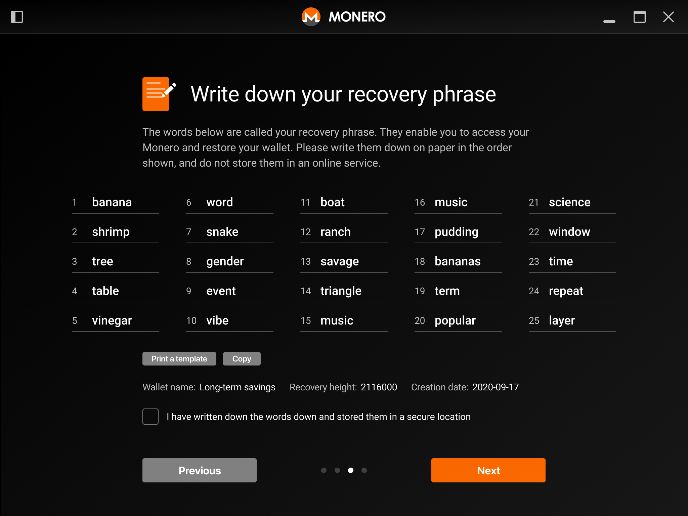
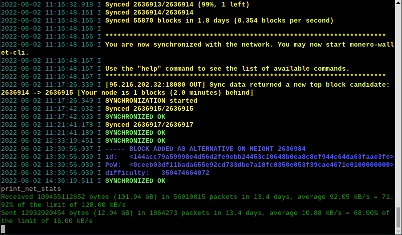
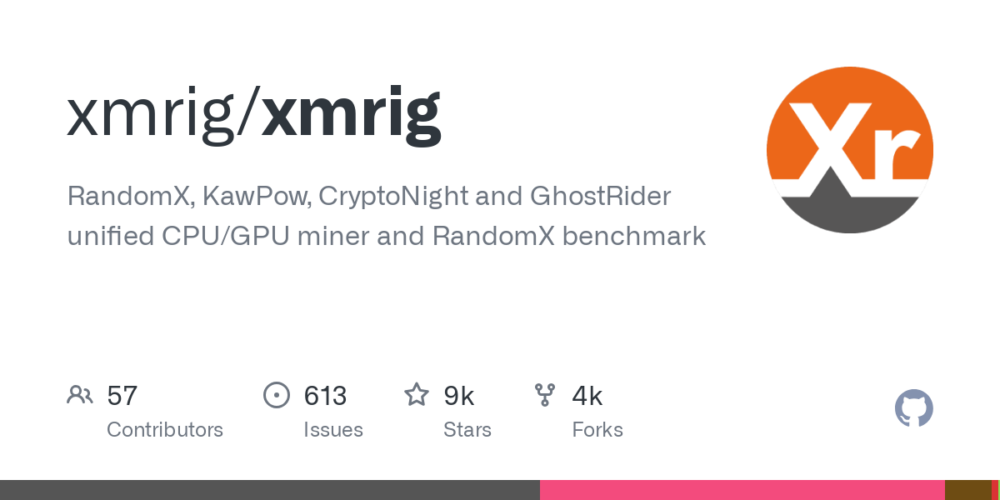
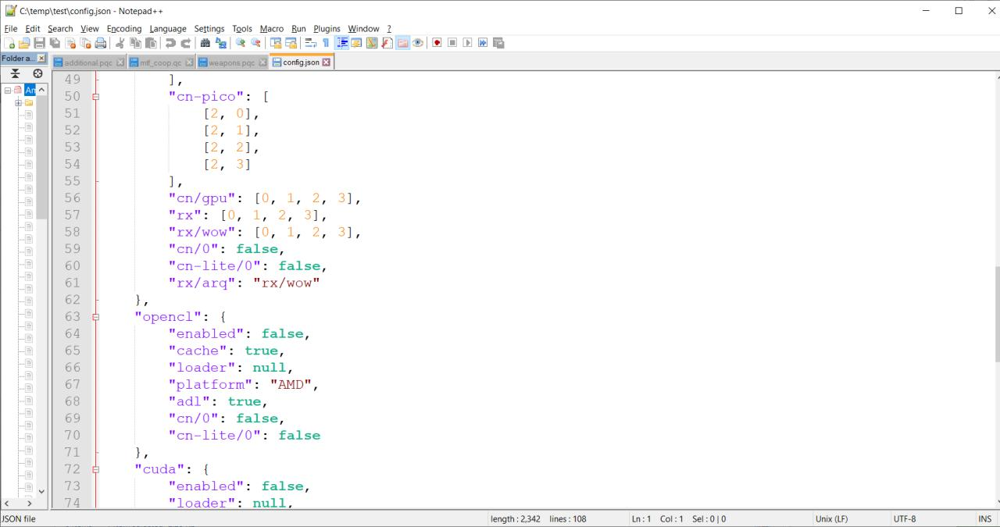
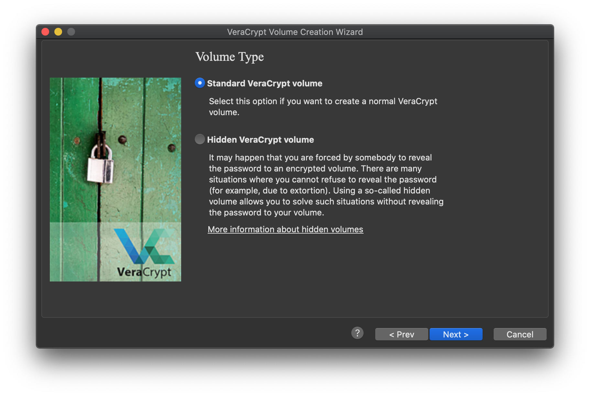
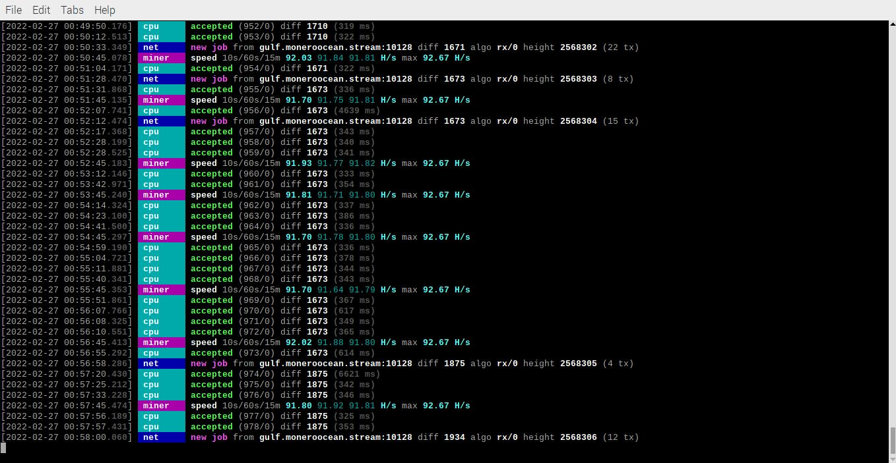
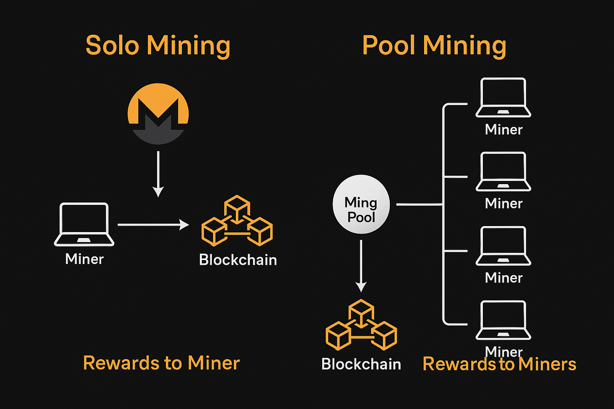

🛡️ Secure Monero Mining Guide (2025)
by CyberleakTV
🔒 Why Monero?
Monero (XMR) is a privacy-focused cryptocurrency that hides the sender, receiver, and amount of every transaction by default. It's the ideal coin for miners and users who prioritize financial privacy.
1️⃣ Step One: Create a Secure Monero Wallet
- Download the official Monero GUI Wallet for your operating system.
- Install and launch the wallet. Click "Create a new wallet".
- Choose a secure name and password.
- Write down your 25-word seed phrase on paper. DO NOT save it on your computer or cloud.
- Optional: Save your keys to an encrypted USB drive (see Step 6).

2️⃣ Step Two: Run a Node (Optional)
Monero can connect to remote nodes or run a local node for full privacy.
🔗 Connecting to a Public Node:
- Faster, easier setup
- Some privacy trade-offs (your IP can be logged)
Example trusted node: node.moneroworld.com:18089
🏠 Running Your Own Node:
- Use the GUI wallet or download
monerod separately
- Run:
./monerod --detach
- This will sync the blockchain (~100GB+)

3️⃣ Step Three: Install XMRig
- Visit XMRig GitHub
- Download the latest release for your OS
- Extract it to a secure folder

4️⃣ Step Four: Configure XMRig
You can edit config.json manually or use the XMRig Config Wizard.
🔧 Manual Edit:
"url": "pool.supportxmr.com:3333" — your mining pool"user": "YOUR_MONERO_ADDRESS" — your XMR address"pass": "x" — leave default unless pool says otherwise"tls": true — enables encrypted connection (recommended)
Example config snippet:
{
"autosave": true,
"cpu": true,
"pools": [
{
"url": "pool.supportxmr.com:443",
"user": "48zX...yourMoneroAddress...",
"pass": "x",
"tls": true
}
]
}

5️⃣ Step Five: Securely Store Your Wallet
To avoid theft or exposure:
- Copy your
.keys file and seed phrase to an encrypted USB
- Use VeraCrypt or LUKS to encrypt the drive
- Disconnect the USB and store it offline in a secure place

Never store your wallet keys on the same device you mine from!
6️⃣ Step Six: Start Mining
- Open terminal and navigate to your XMRig folder
- Run:
./xmrig
- Watch logs to ensure you're connecting and submitting shares

7️⃣ Pool vs. Solo Mining
⛏️ Pool Mining:
- Steady, small payouts
- Beginner-friendly
🧍 Solo Mining:
- Needs your own full synced node
- Rare, large payouts (only if you solve a block)
- Use in
config.json: "url": "127.0.0.1:18081"
